安东尼·布朗绘本：我爸爸
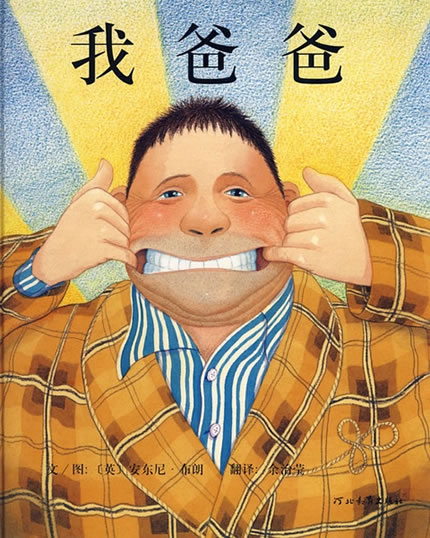
安东尼·布朗，2000年国际安徒生大奖的获得者，一位被英国《卫报》誉为“天才”的超现实画家。
《我爸爸》是可以说是作者对所有父亲的献礼，然而就安东尼‧布朗的生平看来，这本图画书也有
着纪念自己父亲的意味。安东尼‧布朗曾说：“我的父亲是很特别的人，外表强壮、有自信，不过
却也有害羞、敏感的一面，有一点像我爱画的大猩猩。除了教我画图外，他还鼓励我做各种运动，
像是橄榄球、足球和板球……”这位在他眼中高大强壮的父亲，却在安东尼‧布朗十七岁那年因病
突发过世，使他深受打击，经过多年才走出阴霾。
安东尼‧布朗表示《我爸爸》里面爸爸身上的黄褐色格子睡袍、睡衣和鞋都是自己父亲的衣物，多
年来收在箱子里，上面还留着父亲的味道。而睡袍上的格子图案不仅出现在爸爸身上，甚至还出现
在扉页和土司上面。也许，在安东尼‧布朗的眼里，父亲的身影无所不在吧！
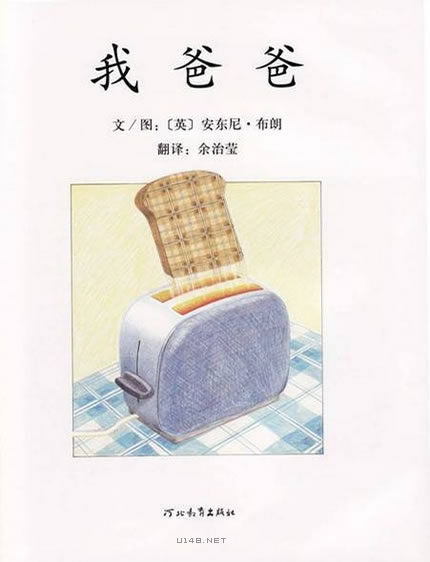
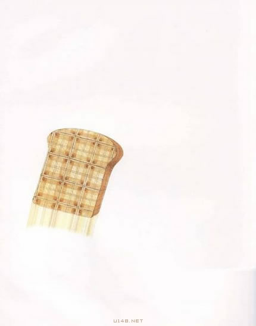
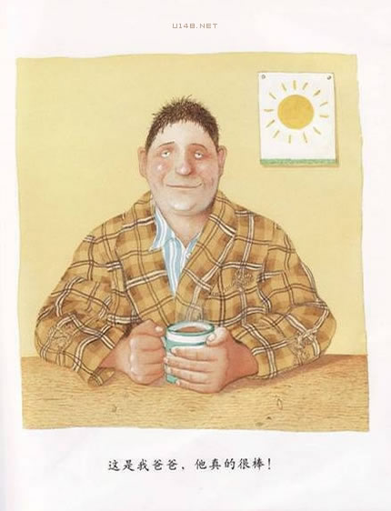
这是我爸爸，他真的很棒！
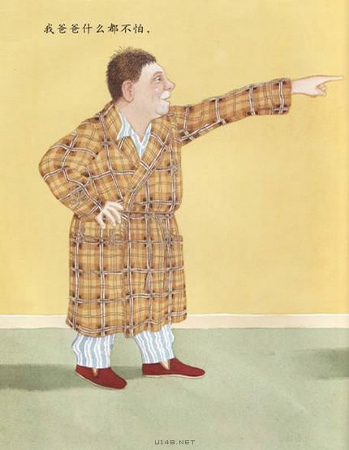
我爸爸什么都不怕！
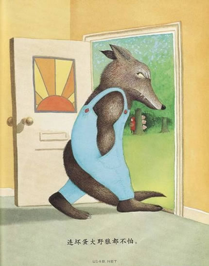
连坏掉大野狼都不怕！
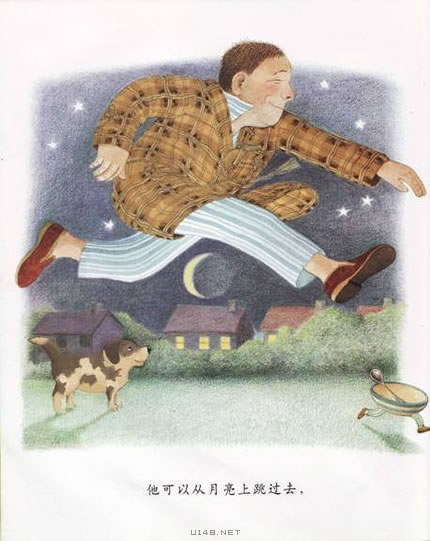
他可以从月亮上跳过去。
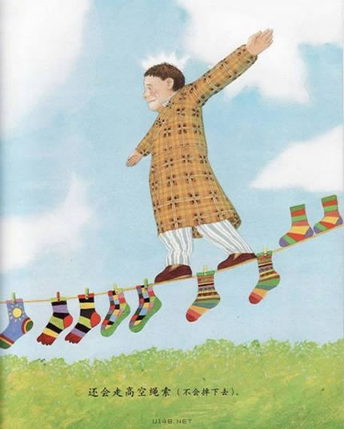
还会走高空绳索
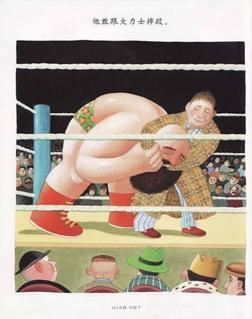
他敢跟大力士摔跤
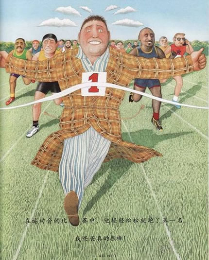
在运动会的比赛中，他轻轻松松就跑了第一名
我爸爸真的很棒！
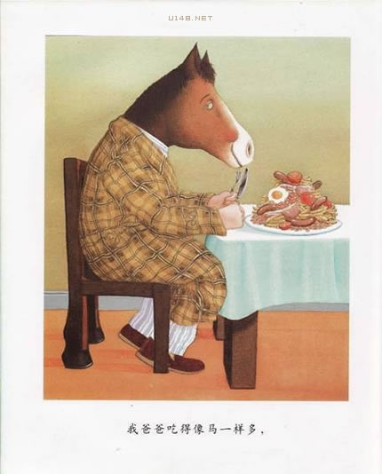
我爸爸吃得像马一样多
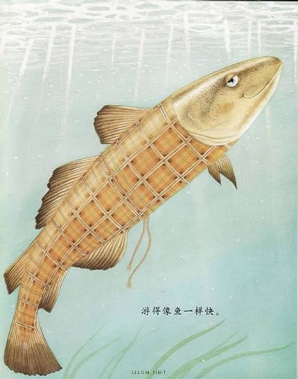
游得像鱼一样快
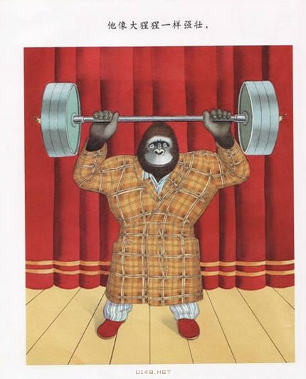
他像大猩猩一样强壮
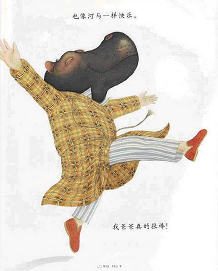
也像河马一样快乐
我爸爸真的很棒
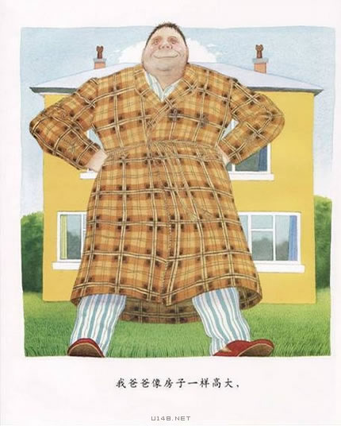
我爸爸像房子一样高大
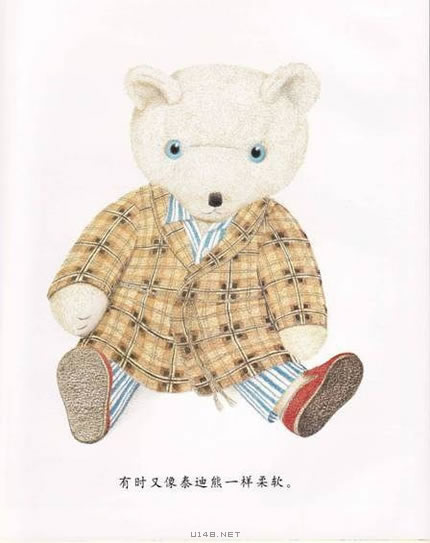
有时又像泰迪熊一样柔软
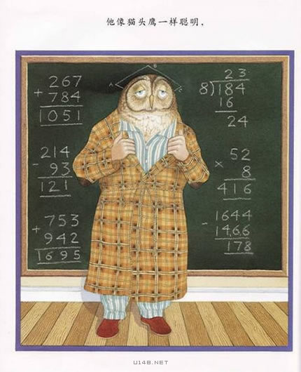
他像猫头鹰一样聪明
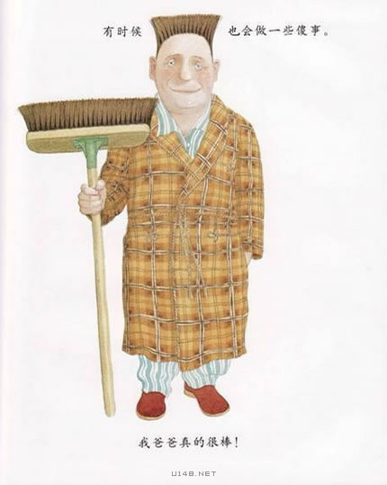
有时候也会做一些傻事
我爸爸真的很棒！
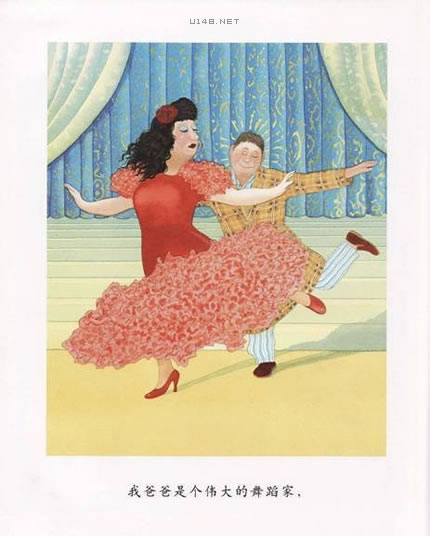
我爸爸是个伟大的舞蹈家
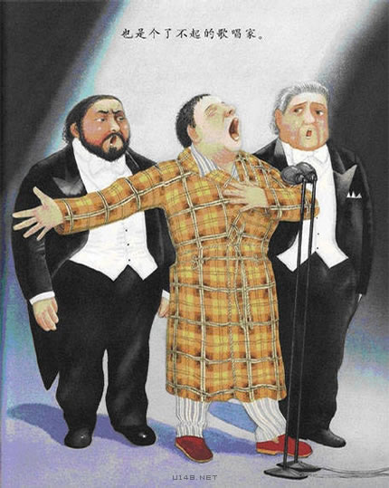
也是个了不起的歌唱家
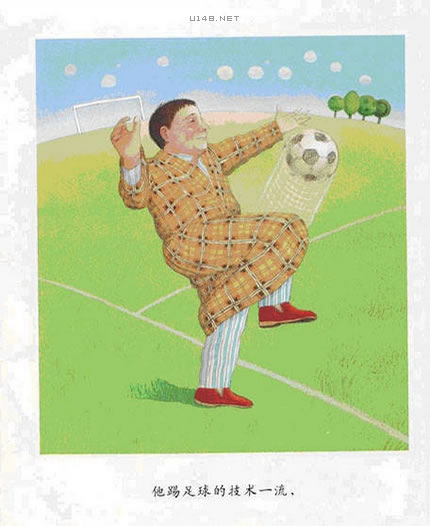
他踢足球的技术一流
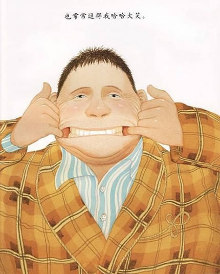
也常常逗得我哈哈大笑
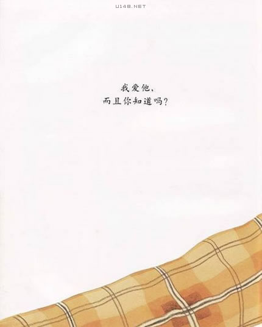
我爱他
而且你知道吗？
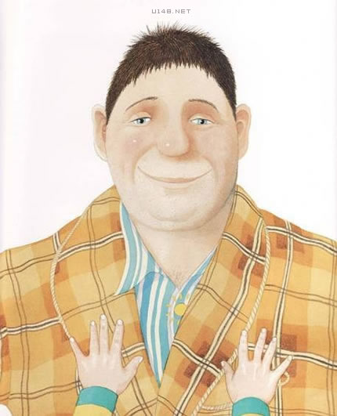
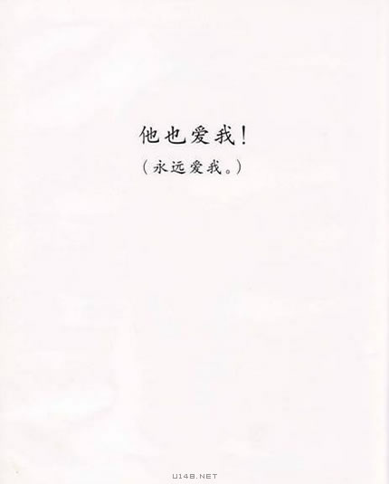
他也爱我！
（永远爱我）
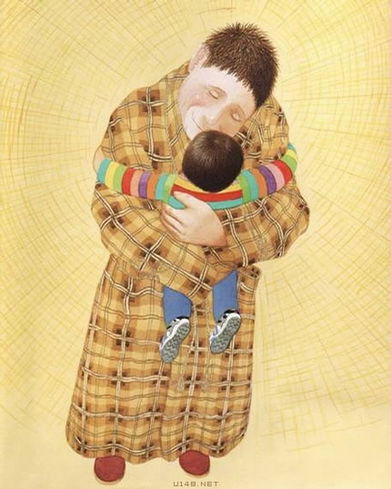
我爸爸什么都不怕！